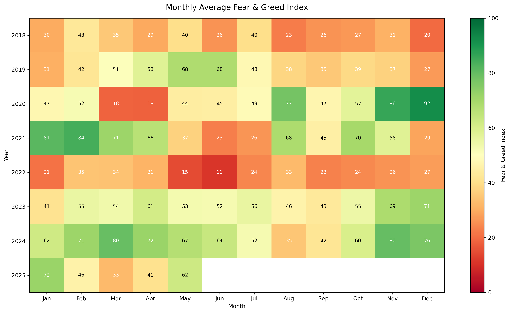
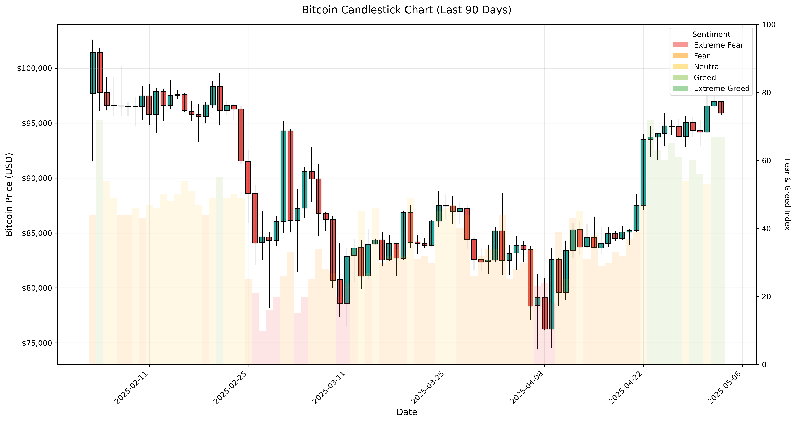

Introduction
Bitcoin is widely recognized for its extreme volatility—its price often moves not
because of traditional financial indicators, but because of investor psychology.
In this project, we analyze the relationship between Bitcoin’s historical price movements
and the Fear & Greed Index, a sentiment score ranging from 0 (extreme fear) to 100 (extreme greed).
Understanding this relationship is important because Bitcoin’s value isn’t tied to corporate earnings
or economic fundamentals. Instead, it is shaped by collective emotion, market momentum, and adoption
patterns. This makes Bitcoin a strong case study for exploring how sentiment influences financial
markets. Our goal was to visualize how Bitcoin’s price interacts with daily sentiment patterns and to
identify whether emotional highs and lows align with market turning points.
Bitcoin Fear & Greed Timeseries
- Purpose: Compare long-term Bitcoin price movements with daily market sentiment to see how fear and greed shift around rallies, crashes, and consolidations.
- Marks:
- Blue line: Bitcoin daily closing price
- Red line: Fear & Greed Index
- Channels:
- Position (x): Date
- Position (y-left): Bitcoin price
- Position (y-right): Fear & Greed Index
- Color: differentiates price (blue) and sentiment (red)
- Interaction:
- Brush zoom to inspect specific time periods
- Tooltips showing date, price, sentiment score, and sentiment category
- Allows users to analyze how sentiment responds before and after major price swings
Sentiment & Volatility Scatterplot
- Purpose: Examine how sentiment categories relate to short-term Bitcoin volatility and whether emotional states correlate with stability or turbulence.
- Marks:
- Circle marks: each point shows one day of sentiment + volatility
- Channels:
- Position (x): 7-day average Fear & Greed Index
- Position (y): 7-day rolling volatility (log returns)
- Color: sentiment category (Extreme Fear, Fear, Neutral, Greed)
- Interaction:
- Year slider to explore patterns across different years
- Legend filtering to show or hide sentiment categories
- Tooltips showing date, volatility, price, and sentiment category
Monthly Sentiment Heatmap

- This is our monthly sentiment heatmap, where each square represents one month and is colored by the average Fear & Greed score for that month.
- The visualization uses rectangular marks, and the main visual channel is color, ranging from red (fear) to green (greed).
- Text labels are added inside each cell to clearly show the exact monthly sentiment values.
- The heatmap reveals clear long-term sentiment cycles in the Bitcoin market.
- Clusters of red, fearful months often appear right before market recoveries.
- Greener months tend to align with sustained bull markets.
- In more recent years, swings between extreme fear and extreme greed appear less dramatic, suggesting increasing market stability or growing institutional influence.
- Overall, the heatmap highlights emotional patterns that are harder to see in daily data.
Candlestick Chart

- This figure is our 90-day candlestick chart, where each candlestick is a bar-like mark encoding the daily open, high, low, and close prices.
- A sentiment layer is added behind the candles, using color as the channel to represent categories such as Extreme Fear, Neutral, and Greed.
- From this chart, we observed that sentiment often moves in parallel with short-term price behavior.
- Red, fearful background colors tend to appear near local price bottoms.
- Greener colors usually show up when the price begins trending upward.
- Rapid shifts from fear to greed often coincide with larger price movements.
- There are also cases where sentiment remains fearful even while price is already recovering, showing that sentiment is helpful context but not perfectly predictive.
Fear and Greed Patterns Over Time
- This interactive bar chart displays the full timeline of daily Fear and Greed Index values from 2018 to 2025.
- The mark used is bars, with each bar representing one day's sentiment score.
- Color is used as a visual channel to represent classification:
- Dark red – Extreme Fear
- Light red – Fear
- Yellow – Neutral
- Light green – Greed
- Dark green – Extreme Greed
- The visualization supports zoom and pan, allowing users to scroll to zoom into specific time periods and drag to navigate across years.
- A tooltip acts as another channel, displaying the date, value, and classification on hover.
- Exploring the full timeline reveals how sentiment patterns evolve over time, showing cycles of fear and greed tied to major market events.
- The color gradient highlights clusters of extreme sentiment and periods of stability.
- Prolonged extreme fear often precedes market recoveries, while sustained greed tends to occur before market corrections.
- Zooming into specific timeframes helps connect sentiment trends to Bitcoin market cycles and major price movements.